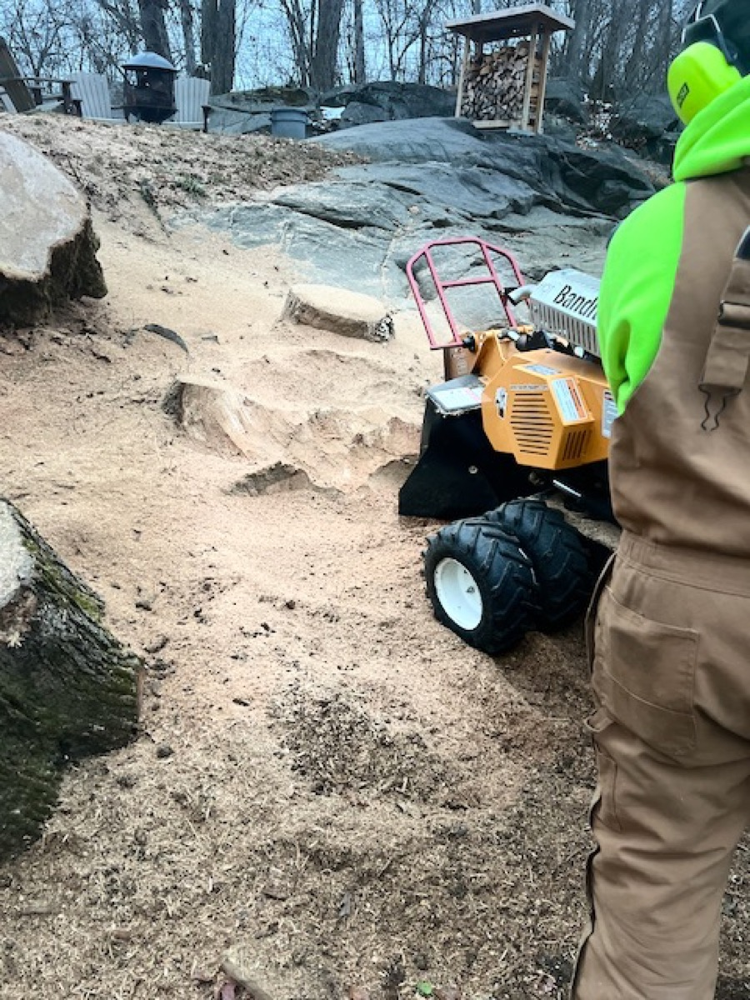
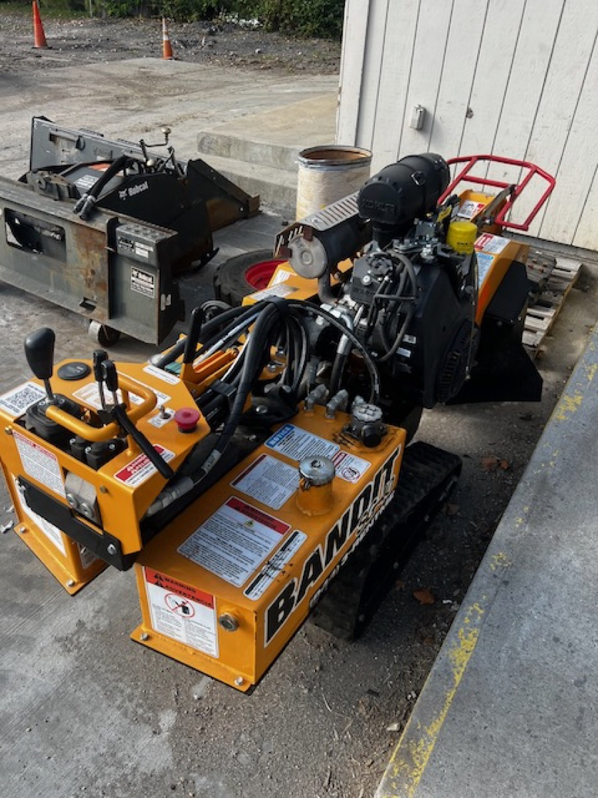

Fast, Affordable Stump Grinding Services
After a tree is removed, the stump left behind can be an eyesore, a tripping hazard, and a magnet for pests. Second Nature Tree Service provides professional stump grinding that eliminates the stump below grade, giving you back clean, usable yard space. Serving Peekskill and all of Northern Westchester and Putnam County.
Our Stump Grinding Process
1. Assessment & Preparation — We check for underground utilities, irrigation lines, and nearby structures. The area around the stump is cleared of rocks and debris.
2. Grinding — Using our professional-grade stump grinder, we grind the stump 6 to 12 inches below ground level. The carbide-tipped cutting wheel reduces the stump to fine wood chips.
3. Cleanup & Fill — Wood chips are used to fill the hole and mound slightly to account for settling. We can also haul chips away and backfill with topsoil if you prefer.
Why Remove Tree Stumps?
- Trip hazard — Stumps are a liability for children, guests, and anyone walking your property
- Pest magnet — Decaying stumps attract termites, carpenter ants, and beetles
- Regrowth — Many species send up aggressive sprouts from stumps left in the ground
- Curb appeal — Old stumps detract from property appearance and can lower home values
- Lawn care — No more mowing around stumps or risking mower blade damage on hidden roots
- Reclaim space — Use that spot for a garden, patio, or just open lawn



Cost Factors for Stump Grinding
Pricing depends on stump diameter, number of stumps, wood hardness, and accessibility. Multiple stumps on the same property often qualify for volume pricing. We provide free estimates so you know the cost before we begin.
Frequently Asked Questions
We grind stumps 6 to 12 inches below ground level, sufficient for planting grass or garden beds. Deeper grinding is available for construction projects.
Chips are used to fill the hole by default and make excellent mulch. We can also haul them away and backfill with topsoil if you prefer.
Yes. We have compact grinders that fit through 36-inch gates and even smaller hand-operated equipment for extremely tight areas.
Most individual stumps take 30 minutes to 2 hours depending on size and wood hardness. Small stumps can be done in as little as 15-20 minutes.
Yes. Mechanical grinding is faster, more thorough, and chemical-free. Chemical methods take weeks or months and introduce chemicals into your soil.